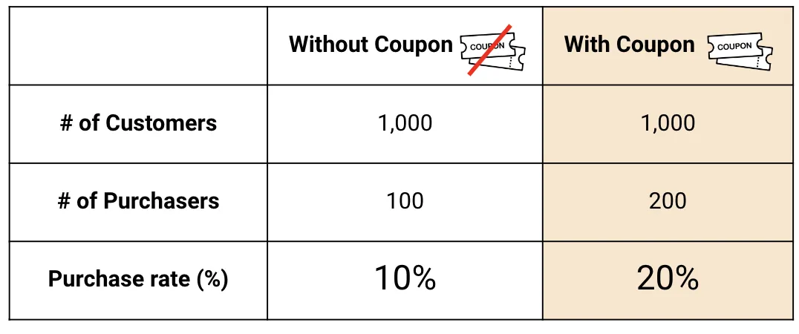
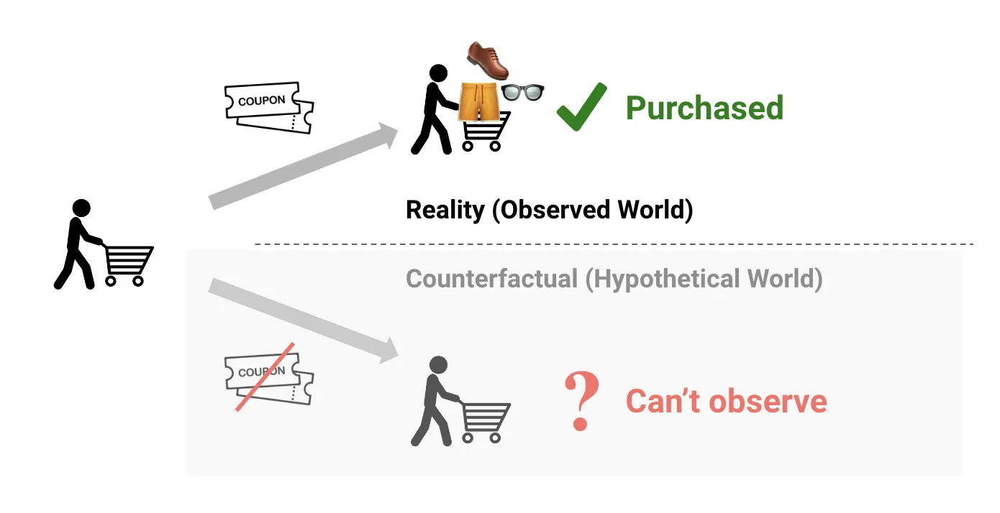
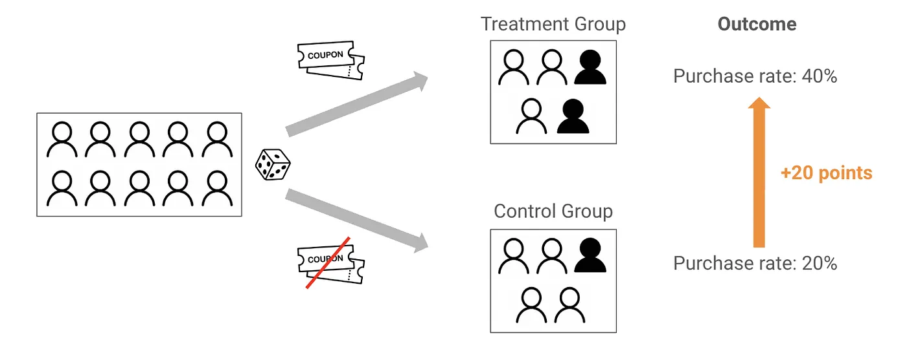

3.1 因果思维
关于中文版
本页是英文版 Marketing Science in Python 的AI翻译。英文版为正式版本，如有出入，以英文版为准。代码、Notebook 和图片中的文字保持英文。 阅读英文版
让我们来看一个许多数据科学家在商业中都会遇到的典型情境。想象你正在协助营销团队的一位同事，对方说：
“营销团队给一部分用户发了优惠券，他们的购买率是未收到优惠券用户的两倍。所以，优惠券一定让购买率翻了一番！”

你会同意这个结论吗？乍一看，你可能倾向于同意。但等一下，如果你知道下面这个补充细节呢？
“我们只给过去 12 个月内购买过的客户发了优惠券。”
这就亮起了红灯。那么，这里潜在的问题是什么？
选择偏差
关键问题是：优惠券的真实影响是什么？如果我们按照刻意设定的标准发放优惠券，就无法公平地比较购买率。收到优惠券的客户即便没有优惠券也可能会购买。他们本来就更活跃，还可能受到了新闻通讯或社交媒体等其他因素的影响。这些因素带来了所谓的选择偏差：当接受处理与未接受处理的两组从一开始就不可比时产生的扭曲。

两组之间 10 个百分点的差距看起来令人印象深刻，但其中大部分在优惠券发出之前就已经存在了。优惠券带来的真实提升（即没有优惠券就不会发生的那部分）可能只有几个百分点。其余部分是选择偏差：优惠券发给了本来就很可能购买的人。
这种模式在营销中随处可见。再营销活动显示出很高的转化率，但那是因为它们触达的是已经访问过你网站的人。邮件营销活动的每收件人收入看起来很亮眼，但这些邮件发给的是你最活跃的订阅者。在这两种情况下，处理与结果之所以相关，是因为客户的意愿，而不是因为处理导致了结果。
什么是因果推断？
那么，我们如何跨过这些陷阱？这正是因果推断的用武之地。
因果推断关注的是，某个特定行动（即“处理”，treatment）与其产生的结果（即“结果”，outcome）之间是否存在因果关系。传统上，它一直是医疗等领域的基石。例如，一个常见的用例是评估一种新药是否能有效治疗某种疾病。在这种情境下，给药是“处理”，患者的康复是“结果”。
但因果推断不只是医疗领域的工具。在电商和营销中，“处理”包括发放优惠券、投放广告或寄送直邮等行动，而“结果”则是购买、注册或收入之类的东西。

反事实
因果推断的主要挑战在于，对每个个体我们只能观察到一种结果。如果我们有时光机，可以先给一位客户发优惠券，然后倒回时间，看看不发优惠券会发生什么。在现实世界中我们做不到：对每位客户，我们永远只能看到故事的一个版本。
这正是因果推断介入的地方：它让我们能够估计那个没有发生的结果，也就是所谓的反事实。

将其形式化可以让问题变得精确。一位客户的处理效应为：
\[\tau = Y(1) - Y(0)\]
这里，\(Y(1)\) 是某人接受处理时发生的结果，\(Y(0)\) 是不接受处理时发生的结果。问题在于，对每个人我们永远只能看到其中之一。如果不考虑这一点，直接比较接受处理与未接受处理的两组，我们就会把真实效应与本来就存在的差异混在一起。这就是选择偏差。
为什么不直接做 A/B 测试？
你可能会想：“为什么不直接做 A/B 测试呢？”
在营销中，这种方法称为 A/B 测试，在更广泛的因果推断文献中，它也被称为随机对照试验（RCT）。它通常被视为回答因果问题的“黄金标准”。其工作方式如下。
你把客户随机分成两组：“实验组”和“对照组”。实验组收到优惠券，对照组没有。假设实验组的购买率最终为 40%，对照组为 20%。二者之差 20 个百分点，就是优惠券的效应。

关键在于随机化。通过随机分配客户，我们确保其他因素（客户偏好、过去的行为、渠道曝光）在两组之间是均衡的。正是这种均衡消除了原本会扭曲比较的选择偏差。
A/B 测试的局限
那么，理解了 A/B 测试，是否意味着它永远是完美的解决方案？遗憾的是，并非如此。虽然 A/B 测试提供了现有最强的证据，但在许多情况下它根本不可行：
机会损失。如果你做 A/B 测试，一半的客户不会收到新产品或新优惠。这可能意味着错失销售和增长，这种“机会损失”企业并非总能承受。
时间限制。A/B 测试可能很耗时。它们往往需要数周甚至数月才能收集到足够的数据来得出可靠的结论。这种延迟可能意味着错过市场窗口或失去竞争优势。
利益相关方的复杂性。当涉及多个利益相关方时，A/B 测试会变得更难。并非每个客户或合作伙伴都有资源或能力有效地执行一次测试。
当 A/B 测试不可行时，我们只能退而依靠观察性数据：在没有任何刻意实验的情况下收集的数据。
辛普森悖论：观察数据的挑战
即便模式看起来很明显，观察性的营销数据也可能具有误导性。
假设我们想了解邮件发送频率与退订风险之间的关系。我们按每位订阅者收到的营销邮件数量及其退订的可能性绘图。在汇总数据中，模式看起来令人意外：收到更多邮件的订阅者似乎更不容易退订。
乍一看，这似乎表明发送更多邮件会降低退订风险。但这个结论应该让我们感到不安。对于同一类型的订阅者，发送过多邮件通常应该增加而不是降低其退订的可能性。
那么缺了什么？此前的邮件互动。
营销团队很少随机发送邮件。经常打开和点击邮件的订阅者通常会收到更多的营销活动邮件，因为他们活跃且响应积极。很少互动的订阅者往往收到的更少，或者被排除在某些发送之外。这些群体的基线退订风险差异很大。
一旦按此前的邮件互动对订阅者进行分组，模式就反转了：在每一个互动组内部，更高的邮件频率都与更高的退订风险相关。（低互动的订阅者总体上更可能退订，但在每个组内部，发送更多邮件仍然会提高这一风险。）
这就是辛普森悖论：汇总趋势说的是一回事，而可比群体内部的模式说的却是相反的另一回事。

混杂因素
在邮件的例子中，此前的互动是一个混杂因素（confounder）：它同时影响处理（邮件频率）和结果（退订风险）。未能考虑混杂因素可能导致误导性的结论，包括像我们刚才看到的那样，得到一个完全反转的效应。这就是为什么识别并控制这些变量是基于观察性数据进行因果推断的核心。

教训是：面对观察性数据，永远要问一问数字背后是否隐藏着混杂因素。
第 3 部分路线图
计划如下。第一项任务是得到一个你可以相信的比较。如果你能随机化，A/B 测试给出最可靠的答案。如果不能，准实验设计会从处理是如何分配的这一点出发重建比较，这也包括在某个已知日期触达了所有人的行动，其中缺失的无处理路径要根据序列自身的历史来预测。第二项任务在你得到一个可信的效应之后开始，它要问的是这个效应在客户之间如何变化，这样你就可以不再把钱花在那些本来就会转化的人身上。这正是元学习器（meta-learner）和增益建模（uplift modeling）所做的事。